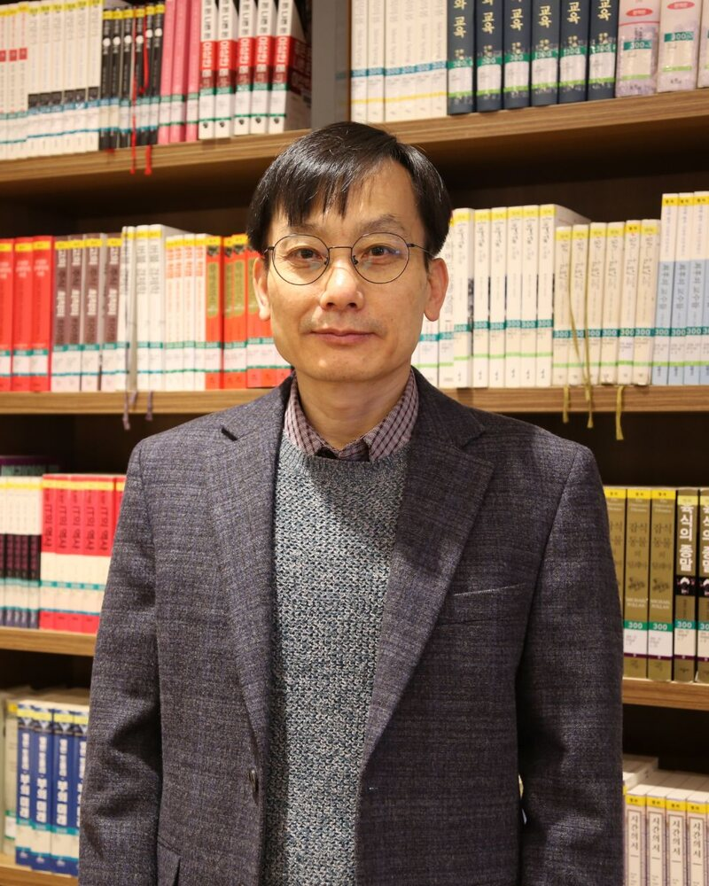

한림대학교 영어영문학과 · 디지털인문예술전공Hallym University · English and Digital Arts & Humanities
김용수 Yongsoo Kim
욕망, 서사, 그리고 디지털인문학Desire, Narrative, and the Digital Humanities
- 한림대학교 영어영문학과/디지털인문예술전공 교수Professor of English and Digital Arts & Humanities, Hallym University
- 한국디지털인문학협의회(KADH) 회장President, Korean Association for Digital Humanities (KADH)
- 한국비평이론학회 회장President, The Criticism and Theory Society of Korea
- 논문Articles
- 34
- 저서Books
- 5
- 역서Translations
- 2
- 초청 강연Invited lectures
- 26
- 학술 발표Conference papers
- 9
- 한림대 재직 연수Years at Hallym
- 22
About
소개 Profile

한림대학교와 미국 털사대학교(석사)를 졸업하고 뉴욕주립대학(버팔로)에서 “Faulkner with Lacan: Desire, Ethics, and the Feminine”으로 박사학위를 받았다. 현재 한림대학교 영어영문학과와 디지털인문예술전공 교수로 재직하고 있으며, 주로 미국 소설과 영화, 라캉의 정신분석 이론, 디지털인문학을 연구하고 있다. 저서로는 “Digital Humanities and Scholarly Research Trends in the Asia-Pacific”(공저, IGI Global, 2019), “자크 라캉”(살림, 2008), 역서로는 “정치, 사회적 개념의 역사”(공역 2010), “역사를 읽는 방법”(공역 2012), 최근 논문으로는 “한국 영어영문학 연구 70년의 지형도: 의미연결망 분석과 학술지 『영어영문학』(1955-2024)” (2025) 등이 있다.
Yongsoo Kim is professor of English and Digital Arts & Humanities at Hallym University in South Korea. He is president of the Korean Association for Digital Humanities. His research primarily focuses on American novels and films, Lacanian psychoanalytic theory, and digital humanities. His publications include Digital Humanities and Scholarly Research Trends in the Asia-Pacific (co-authored, IGI Global, 2019), Jacques Lacan (Sallim, 2008), and translations such as Melvin Richter’s The History of Political and Social Concepts: A Critical Introduction (co-translation, 2010) and Quentin Skinner’s Visions of Politics (co-translation, 2012). His recent papers include “Topology of Korean English Studies: A Semantic Network Analysis of The Journal of English Language and Literature (1955-2024)” (2025).
박사학위 논문Dissertation
Faulkner with Lacan: Desire, Ethics, and the Feminine
SUNY Buffalo · Ph.D. · 2001
연구 분야 — 누르면 관련 연구로Fields — select to browse
연구실Office
인문1관 (대학본부관) 2613Humanities Bldg. 1 (Main Administration Bldg.), Room 2613
Timeline
연보 Chronology
Works
연구 성과 Publications
라캉과 포크너, 영화에서 출발한 연구가 2017년을 기점으로 디지털인문학으로 옮겨 갑니다. 그림의 블록 하나가 논문·저서 한 편입니다. 막대를 누르면 그 해의 성과만, 주제를 누르면 그 주제만 볼 수 있습니다.Work that began with Lacan, Faulkner, and film turns toward the digital humanities from 2017. Each block is one article or book. Select a column for that year, or a theme to see only that theme.
Talks
강연·발표 Lectures & Conferences
Awards